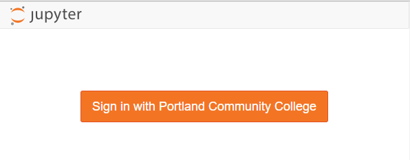
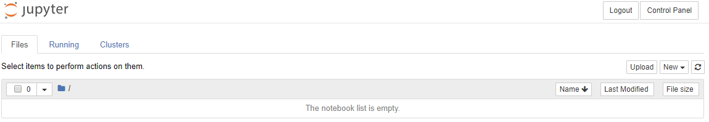
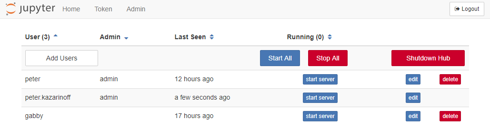

Gitlab Authentication
Now that the JupyterHub deployment works and we have two users set up on the server, we are going to get into the weeds of getting the Gitlab authenticator to work.
Why Gitlab authenticator instead of just setting up users one by one at the command line? LRZ provides Gitlab for both staff and students and binds the accounts to the TUMonline accounts. Instead of emailing students individual user names and passwords (and having students remember another set of usernames and passwords), students could log into JuypterHub using the same login that they use to access their gitlab repositories and TUMonline information. It's just going to take a bit of work to get there.
Gitlab OAuth Instance
To allow students to use Gitlab usernames and passwords to log into JupyterHub, the first thing we need to do is set up a Gitlab OAuth instance.
To obtain the Gitlab OAuth credentials, we need to log into Gitlab https://gitlab.lrz.de/profile/applications and select [User Settings], then [Applications] on the menu.
Create a new application using JupyterLab as the name and https://m09vm14.ma.tum.de/hub/oauth_callback as the callback URL. Add all scopes (otherwise, you will just get an error later).
After creating a new set of OAuth credentials, note the:
- application ID
- secret
The client ID and client secret strings will be included in our revised JupyterHub configuration.
To make things a little easier, we will commit this information to a separate json file where we then pull out the information. Create a json file that looks like this:
{"web":
{
"application_id":"XXXXXXXXXXXXXXXXXXXXXXXXXXXXXXXX",
"secret":"XXXXXXXXXXXXXXXXXXXXXXXXXXXXXXXXX",
"redirect_uris":["https://m09vm14.ma.tum.de/hub/oauth_callback"]
}
}
Set the application ID and the client secret accordingly.
On a local computer, rename the json file to gitlab_oauth_credentials.json. We can use Python and the json module from the Standard Library to pull out the "application_id" and "client_secret" from the json file. Make sure the json file is in the same directory on your local computer where the Python code is run.
Try the following Python code on your local computer:
with open('gitlab_oauth_credentials.json') as f: gitlab_oauth = json.load(f) print(gitlab_oauth['web']['application_id']) print(gitlab_oauth['web']['secret'])
The output will be the 'application_id' and 'secret' from the json file.
Add the json file to .gitignore
Now we need to move the gitlab_oauth_credentials.json to the sever, but before we do: MAKE SURE TO ADD THE FILE TO .gitignore !!! WE DON'T WANT PRIVATE CREDENTIALS STORED ON GITHUB !!!.
Warning
Important! Do not save private credentials in a public GitHub repository! Keep your credentials private!
In .gitignore on my local machine, I added the following lines at the end. Note that locally this file is saved at projectroot/etc/jupyterhub/google_oauth_credentials.json
# .gitignore ... ## Config files /etc/jupyterhub/config.json /etc/jupyterhub/google_oauth_credentials.json ...
Move the json file to the server
Now move the json file over to the server and save it in the /etc/jupyterhub/ directory. I used scp to move the json file over to the server, but you can also use vim on the server and just copy-paste.
After the json file is saved on the server, the contents of /etc/jupyterhub on the server should be:
/etc/jupyterhub/ ├── gitlab_oauth_credentials.json └── jupyterhub_config.py
Modify jupyterhub_config.py
Once we get our Gitlab OAuth credentials, we need to edit jupyterhub_conf.py again. Note your Gitlab OAuth credentials are replaced by the credentials from the gitlab_oauth_credentials.json file.
# Configuration file for jupyterhub. # /etc/jupyterhub/jupyterhub_config.py # used to read the json gitlab oauth config file import json from oauthenticator.gitlab import LocalGitLabOAuthenticator # PAM Authenticator c = get_config() c.JupyterHub.log_level = 10 c.Spawner.cmd = '/srv/jupyterhub/venv/bin/jupyterhub-singleuser' c.Spawner.default_url = '/lab' # Cookie Secret Files c.JupyterHub.cookie_secret_file = '/srv/jupyterhub/jupyterhub_cookie_secret' c.ConfigurableHTTPProxy.auth_token = '/srv/jupyterhub/proxy_auth_token' # Users # c.Authenticator.whitelist = {'ritter'} # c.Authenticator.admin_users = {'ritter'} # sets a custom html template at the login screen. c.JupyterHub.template_paths = ['/srv/jupyterhub/custom-templates/'] c.JupyterHub.authenticator_class = LocalGitLabOAuthenticator with open('/etc/jupyterhub/gitlab_oauth_credentials.json') as f: gitlab_oauth = json.load(f) c.LocalGitLabOAuthenticator.client_id = gitlab_oauth['web']['application_id'] c.LocalGitLabOAuthenticator.client_secret = gitlab_oauth['web']['secret'] c.LocalGitLabOAuthenticator.oauth_callback_url = 'https://m09vm14.ma.tum.de/hub/oauth_callback' # replace with your domain c.LocalGitLabOAuthenticator.create_system_users = True c.Authenticator.add_user_cmd = ['adduser', '-q', '--gecos', '""', '--disabled-password', '--force-badname'] c.LocalGitLabOAuthenticator.hosted_domain = 'ma.tum.de' # replace with your domain c.LocalGitLabOAuthenticator.login_service = 'Technische Universität München' # replace with your 'College Name' # Users #c.Authenticator.whitelist = {'ritter','viviana'} c.Authenticator.admin_users = {'ritter','michael.ritter'}
This little line:
c.Authenticator.add_user_cmd = ['adduser', '-q', '--gecos', '""', '--disabled-password', '--force-badname']
was a real gottacha. Our usernames are often in the form:
firstname.lastname
When a student logs in, JupyterHub tries to create a new Linux user with a dot . in their username. Usernames with . do not work on Linux. I tried to create a new Linux user with a dot in their username, and the terminal asked me to use the --force-badname flag. So --force-badname is what we'll add to the c.Authenticator.add_user_cmd list. Otherwise, users (students) will be able to authenticate with GitLab, but they won't get a new user account on the server, and they won't be able to run notebooks or Python code.
Set GITLAB_HOST
Open the file /etc/systemd/system/jupyterhub.service. In the section [Service] add the following line :
Environment="GITLAB_HOST=https://gitlab.lrz.de"
Install oauthenticator, restart JupyterHub and login
Before we can restart JupyterHub and try our Google OAuth configuration out, we need to install the Python package oauthenticator into the virtual environment that runs JupyterHub. Log onto the server, activate the virtual environment by changing into the directory and then issuing the commands:
# cd /srv/jupyterhub # source venv/bin/activate pip install oauthenticator # python >>> import oauthenticator >>> oauthenticator.__version__ '0.8.2' >>> exit()
Restart the virtual machine and JupyterHub and browse to the web address attached to the server.
$ sudo reboot
You should see Active in the status screen. If not, there is some trouble shooting to do. Use [Ctrl]+[c] to exit the status screen.
● jupyterhub.service - JupyterHub
Loaded: loaded (/etc/systemd/system/jupyterhub.service; disabled; vendor preset: enabled)
Active: active (running) since Fri 2019-02-08 18:42:23 UTC; 6s ago
Main PID: 9178 (jupyterhub)
Tasks: 8 (limit: 1152)
Log in with a Google username and password
If JupyterHub is running OK and there were no errors after the revisions to the jupyterhub_config.py file. Open a web browser and try to Log in.
The login window should now look something like:

We can log in with our Google user name and password (college username and password).
Pretty sweet!
Note the Jupyter notebook file browser is empty after we log on. A new user was created by JupyterHub when we logged in. This new user's home directory is empty.

If you added your college username was added to the c.Authenticator.admin_users = { } set in jupyterhub_config.py, you will be able to see an [Admin] tab when you click [Control Panel] in the Jupyter notebook file browser. If you click [Admin], you should see three users in the user list.

You can shut down the you college username's notebook server and logout (or play around with some notebooks).
After we log in using our college username and password, we can see if JupyterHub created a new user (with our college username) on the server. The command below produces a long list of users. This long list contains the non-root sudo user peter and the Google authenticated user (college username).
$ awk -F':' '{ print $1}' /etc/passwd
....
uuidd
dnsmasq
landscape
sshd
pollinate
peter
gabby
peter.kazarinoff
Summary
This was a big section and we got a lot accomplished. At the end of it, we have a running JupyterHub server that allows students and faculty to log into JupyterHub using their college useranmes and passwords. We accomplished this in a couple steps:
- Create a Google OAuth instance in the Google Developer's console. Download and save the json file that stores the client ID and client secret.
- Figure out how to pull the client ID and secret out of the json file using Python's json module from the Standard Library.
- Add the json file to .gitignore so that our private client ID and private client secret are not made public.
- Move the json file over to the server with FileZilla.
- Modify the
jupyterhub_config.pyfile. Add Google authentication to our JupyterHub configuration. - On the server,
pipinstall oauthenticator into the virtual environment that runs JupyterHub. - Restart JupyterHub and login with a Google username and password.
- Use the JuputerHub admin and the terminal to see the new user JupyterHub added to our server
Next Steps
The next step is to make the login screen look like our college login screen. Right now, students see a orange button on the login screen. Next, we'll mess around with some templates, html and css to get our JupyterHub login screen to look a lot more like the college login screen.